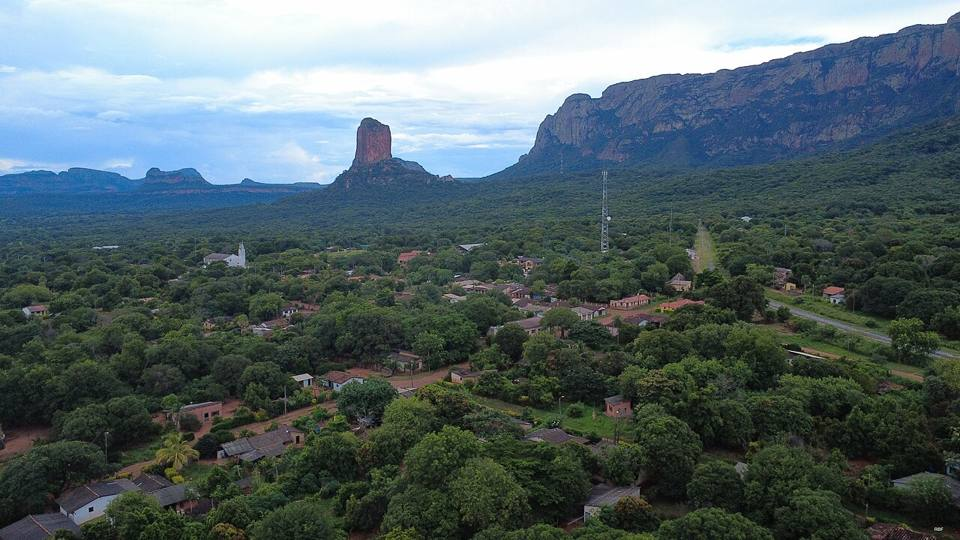

Chochís et la Torre de David
Département de Santa Cruz · Nature et randonnée

À Chochís, une gigantesque falaise de grès rouge, la Torre de David, domine la forêt. À ses pieds, un sanctuaire construit après une catastrophe naturelle se fond dans la roche. On peut grimper jusqu'en haut pour une vue magnifique sur la vallée de Tucavaca, puis se baigner sous les cascades.
400 maltitude
1 joursur place
À faire
- Sanctuaire marial de Chochís, construit au pied de la falaise
- Montée à la Torre de David (vue sur toute la vallée)
- Cascades et baignade dans la vallée de Tucavaca
À goûter
- Locro de gallinaSoupe de riz épaisse au poulet fermier, réconfortante, typique de l'Orient.
- MasacoBanane plantain ou manioc écrasés avec du charque ou du fromage. Riche et nourrissant.
- Fruits tropicauxMangues, ananas, papayes, achachairú (petit fruit acidulé) et jus frais partout pour quelques bolivianos.
Conseil. Sur la route et la voie ferrée entre San José et Roboré. Mieux avec un guide local depuis Roboré.
Comment aller à Chochís
Photos de Chochís et la Torre de David


_-_Chiquitos,_Bolivia.jpg){kind=link}

_-_Choch%C3%ADs,_Bolivia.jpg){kind=link}
Autres lieux de la région
 RoboréPetite ville tranquille de la Chiquitanía, base pour Santiago de Chiquitos, Chochís et Aguas Calientes.
RoboréPetite ville tranquille de la Chiquitanía, base pour Santiago de Chiquitos, Chochís et Aguas Calientes. Santiago de ChiquitosAncien village de mission perché sur la serranía : miradors, randonnées, grottes et cascades.
Santiago de ChiquitosAncien village de mission perché sur la serranía : miradors, randonnées, grottes et cascades. Aguas Calientes (rivière chaude)Une rivière d'eau chaude naturelle (autour de 38 °C) au milieu de la forêt : on s'y baigne avec les petits poissons.
Aguas Calientes (rivière chaude)Une rivière d'eau chaude naturelle (autour de 38 °C) au milieu de la forêt : on s'y baigne avec les petits poissons.